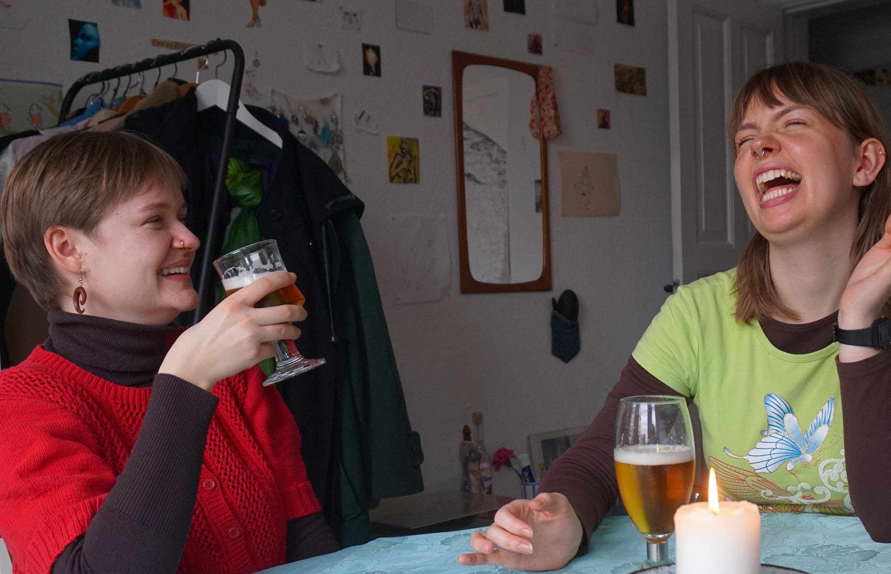

Her ved TrøjborgBryg er det vigtigt for os, at god smag er i fokus. Dette
gælder
både
for
vores
traditionelle
øl, som indeholder alkohol, men især også vores alkoholfri øl
Den alkoholfri øl er både et perfekt
alternativ til dem som skal køre hjem og til dem som
foretrækker ikke at drikke alkohol.

Fordele ved at tilvælge alkoholfri øl
- De kan nydes i alle sammenhænge
- Man får ikke tømmermænd
- Man kan køre hjem
- Man er frisk i hovedet under festen og dagen efter
- Man indtager færre kalorier
Vi mener selvfølgelig selv, at vi laver de bedste alkoholfri og
special øl der findes på markedet, og for den sags skyld i Aarhus.
For os skal en alkoholfri øl indeholde en god og kraftig smag, det gælder alt fra vores pilsner til
vores lager.
Derudover er alle vores alkoholfri øl samt traditionelle øl, lavet i respekt for naturen og indeholder kun naturlige smage.
I Danmark må alkoholfri produkter indeholde op til 0,5%
alkohol.
Derfor er der mange der spørger:
"Er alkoholfri øl, helt alkoholfri?"
Vores alkoholfri øl indeholder selvfølgelig 0,0% alkohol, da vi syntes at ALLE kan dele glæden ved at åbne en kold øl, og være med i både festerne og hverdagens glæder.
Hvorfor vælge TrøjborgBryg alkoholfri øl?
- De indeholder 0,0% alkohol
- De indeholder kun naturlige smage
- De er lavet til alle årets fester, men kan nydes hver dag
Til alle og til enhver begivenhed
Vi syntes at det er vigtigt, at der findes en øl til alle og en øl som passer til enhver begivenhed.
Derfor har vi i år lanceret en række alkoholfri øl, som kan nydes til enhver lejlighed og til alle sæsonernes fester.
Du kan nu dele glæden ved sæsonernes øl med dine venner og familie, uden af skulle takke nej grundet kørsel, tidlige morgener eller blot fordi du ikke nyder effekten af alkohol.
